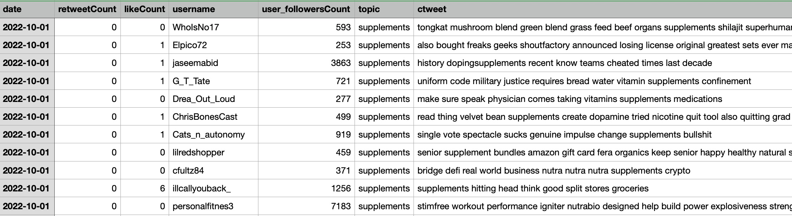
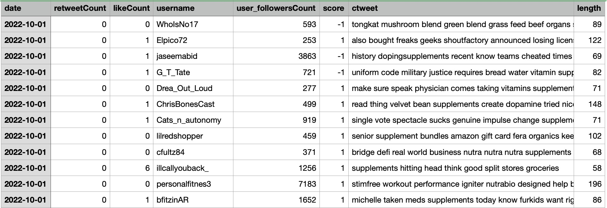
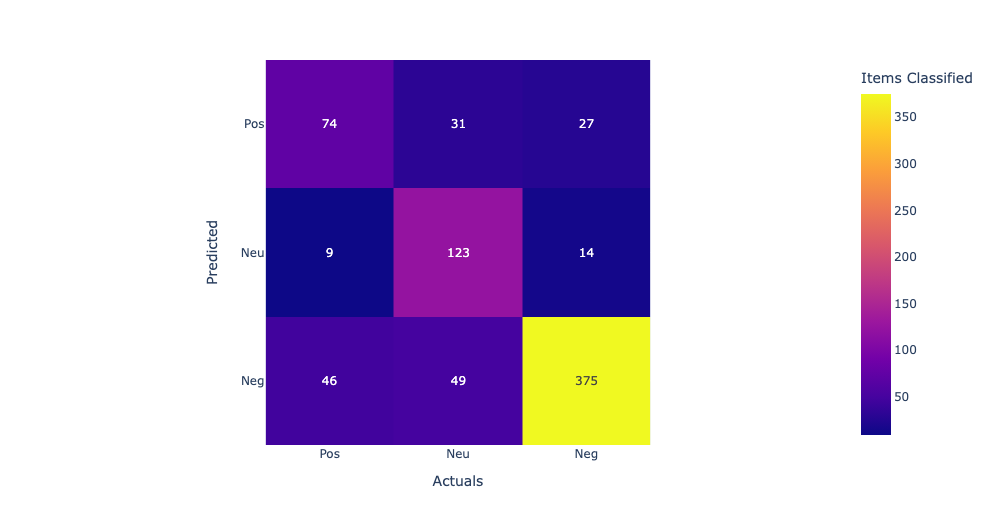
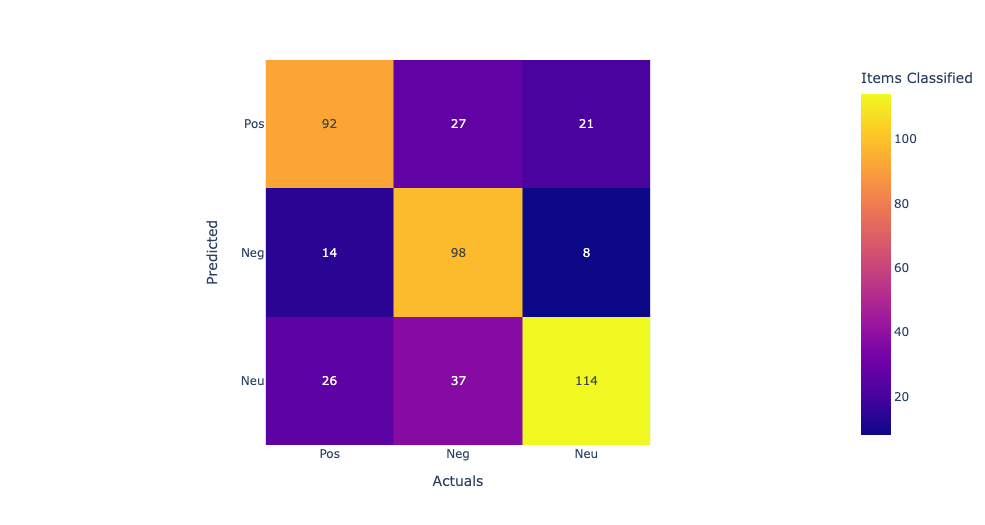
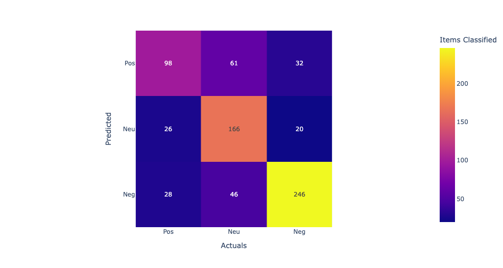
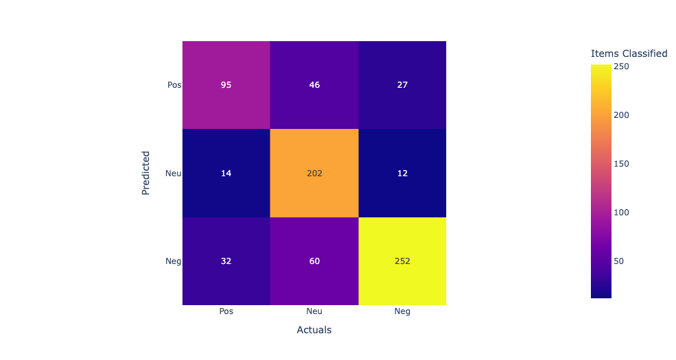

Support Vector Machines (SVMs) are a type of machine learning algorithm used for classification and regression analysis. They are based on the idea of finding the hyperplane that maximally separates different classes in the input data.
In a binary classification problem, the SVM algorithm tries to find the hyperplane that separates the data into two classes with the maximum margin, i.e., the maximum distance between the hyperplane and the closest data points from each class. This is done by solving an optimization problem that maximizes the margin subject to some constraints.
SVMs can also be used for multi-class classification problems by combining multiple binary classifiers. In regression analysis, SVMs can be used to find a hyperplane that approximates a non-linear function by transforming the input data into a higher-dimensional space.
Some of the advantages of SVMs include: Effective in high-dimensional spaces Memory efficient due to the use of a subset of training points (called support vectors) Versatile as it can handle both linear and non-linear problems through the use of kernel functions Robust to overfitting However, SVMs can be sensitive to the choice of kernel function and the cost parameter, and they can be computationally expensive when dealing with large datasets.
In this approach, the weight of each word in a document is proportional to its frequency in the document and inversely proportional to its frequency in the corpus. Once the text documents are represented as vectors, SVMs can be used to learn a hyperplane that separates different categories based on the feature vectors. The SVM algorithm tries to find the hyperplane that maximally separates the different categories while minimizing the classification error. The choice of kernel function and hyperparameters such as the cost parameter and the regularization parameter can be tuned to optimize the classification performance. SVMs have been shown to be effective for text classification problems and have been widely used in various applications such as spam filtering, sentiment analysis, and topic classification. However, SVMs can be computationally expensive when dealing with large datasets, and the choice of kernel function and hyperparameters can significantly affect the classification performance.
Support Vector Machines (SVMs) can be used for text classification problems, where the goal is to classify text documents into different categories such as spam/not spam, positive/negative sentiment, or topic classification. The basic idea is to represent each text document as a vector of features and use SVMs to learn a hyperplane that separates different categories. One common approach for text classification is to represent each document as a bag-of-words (BoW) model, where each document is represented as a vector of word frequencies. In this approach, the vocabulary of words is first extracted from the corpus of documents, and each document is represented as a vector where each dimension corresponds to a word in the vocabulary, and the value of each dimension represents the frequency of that word in the document. Another approach is to use the term frequency-inverse document frequency (tf-idf) method to weight the word frequencies based on their importance in the corpus.
- Used Clustering data: ClusterData_Twitterv2
Link to the dataset: Dataset
Link to the Python code: Link to the Python code: Code
The dataset includes tweet information with the additional column called topics which includes supplement, drugs, proteins, and diet
Results
SVMs to classify supplement intake data help in identifying patterns and trends in supplement consumption that may be associated with different health conditions or dietary preferences. For example, the classification results can help identify supplements that are commonly used for specific health conditions or goals, such as muscle building or weight loss. The SVM algorithm can also be used to build predictive models that can predict the likelihood of a person consuming a particular supplement or drug based on their dietary habits, age, gender, or other demographic factors. This can be helpful in developing personalized recommendations for supplement and drug intake based on individual needs and preferences. In summary, using SVMs to classify supplement intake data with labels such as supplements, drugs, proteins, and diet can provide valuable insights into supplement consumption patterns and help in developing personalized recommendations for supplement and drug intake based on individual needs and preferences.
In this confusion matrix, the rows represent the predicted labels, and the columns represent the actual labels. The true positives (TP) represent the number of samples that are correctly classified as positive, and the true negatives (TN) represent the number of samples that are correctly classified as negative. The false positives (FP) represent the number of samples that are incorrectly classified as positive, and the false negatives (FN) represent the number of samples that are incorrectly classified as negative. From the confusion matrix, we can see that the model has the highest accuracy for supplements and diet, with 76% and 74% accuracy respectively. However, the model performs poorly for drugs, with only 7% accuracy, and for protein, with 69% accuracy. The high false negative rates for drugs and protein suggest that the model may be missing some important features or may need further optimization to improve its accuracy for these categories.

Linear Kernel:The first row shows the true positives (TP), false negatives (FN), and false positives (FP) for the first class. The second row shows the TP, FN, and FP for the second class, and the third row shows the TP, FN, and FP for the third class. Looking at the values in the confusion matrix, we can see that the SVM correctly classified 11 samples from the first class, misclassified 2 as the second class, and none as the third class. For the second class, it correctly classified 714 samples, misclassified 113 as the third class, and none as the first class. For the third class, it correctly classified 1910 samples, misclassified 3 as the second class, and none as the first class. Overall, the model seems to perform well as it correctly classified the majority of the samples in each class. Model accuracy score with linear kernel and C=100.0 : 0.9786 Sigmod Kernel:In this case, the sigmoid kernel does not perform well, as all predictions are being assigned to the majority class. This suggests that the sigmoid kernel may not be appropriate for this dataset. Model accuracy score with sigmoid kernel and C=100.0 : 0.8772
Above are the accuracy scores obtained by training SVM models with different kernels and hyperparameters on the same dataset. The accuracy score measures the proportion of correctly classified samples out of the total number of samples in the test set. Here's a brief explanation of each line: "Model accuracy score with default hyperparameters: 0.9571": This refers to the accuracy score obtained by training an SVM model with default hyperparameters, which uses the RBF (Radial Basis Function) kernel. The accuracy is 0.9571, meaning that the model correctly classified 95.71% of the test samples. "Model accuracy score with rbf kernel and C=100.0: 0.9844": This refers to the accuracy score obtained by training an SVM model with the RBF kernel and C=100.0 hyperparameter. The accuracy is 0.9844, meaning that the model correctly classified 98.44% of the test samples. Increasing the value of C allows for more complex models that better fit the training data. "Model accuracy score with linear kernel and C=100.0: 0.9786": This refers to the accuracy score obtained by training an SVM model with the linear kernel and C=100.0 hyperparameter. The accuracy is 0.9786, meaning that the model correctly classified 97.86% of the test samples. The linear kernel is useful when the data can be separated well by a linear boundary. "Model accuracy score with sigmoid kernel and C=100.0: 0.8772": This refers to the accuracy score obtained by training an SVM model with the sigmoid kernel and C=100.0 hyperparameter. The accuracy is 0.8772, meaning that the model correctly classified 87.72% of the test samples. The sigmoid kernel can be useful when the data is not easily separable by a linear or RBF kernel, but in this case it did not perform as well as the other kernels.